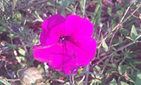
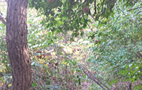

 Fall is a beautiful time of year in Michigan. The weather is wonderful, as it is still warm in the day, but not too hot, and the evenings are cool and crisp, but not too cold. The plants are still alive and vibrant, still holding their leaves. And, in the middle of the fall season you get some fantastic fall colors in the leaves of many species of trees.
Many of the flowers have disappeared, but some annuals, and even a few perennials, will hang on with bright blooms to the end of the season. Many of the plants are still green, but are already going dormant, shutting down until the next spring season.
| Still Blooming | Snapdragons |
| Petunias |
The woods and rivers are full of life, and it is a perfect time of year for boating and hiking. The woods no longer are full of bugs. Even the mosquitos are no longer there at dawn and dusk. The river water is a bit colder, but still excellent for boating. Probably not the best temperature any more for swimming.
Go to top of page